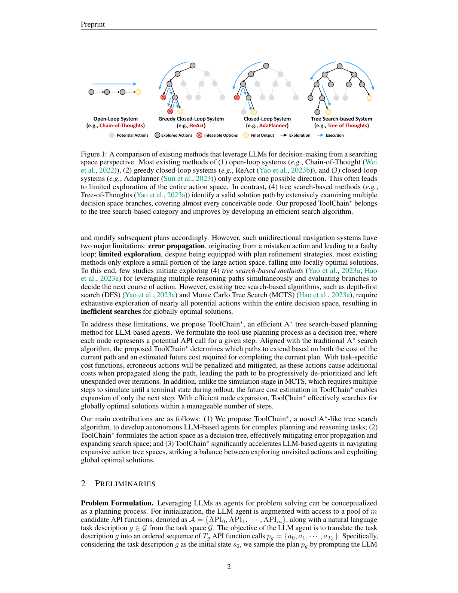
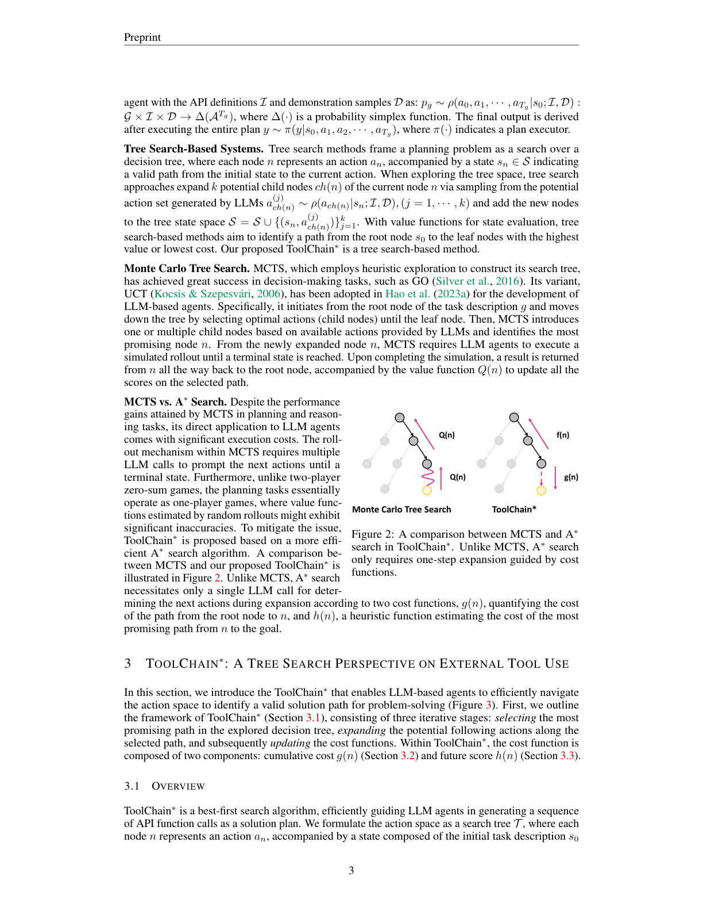
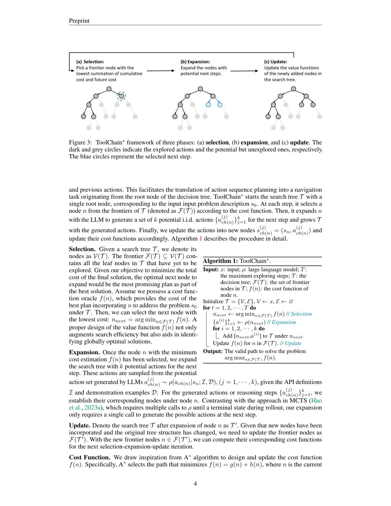
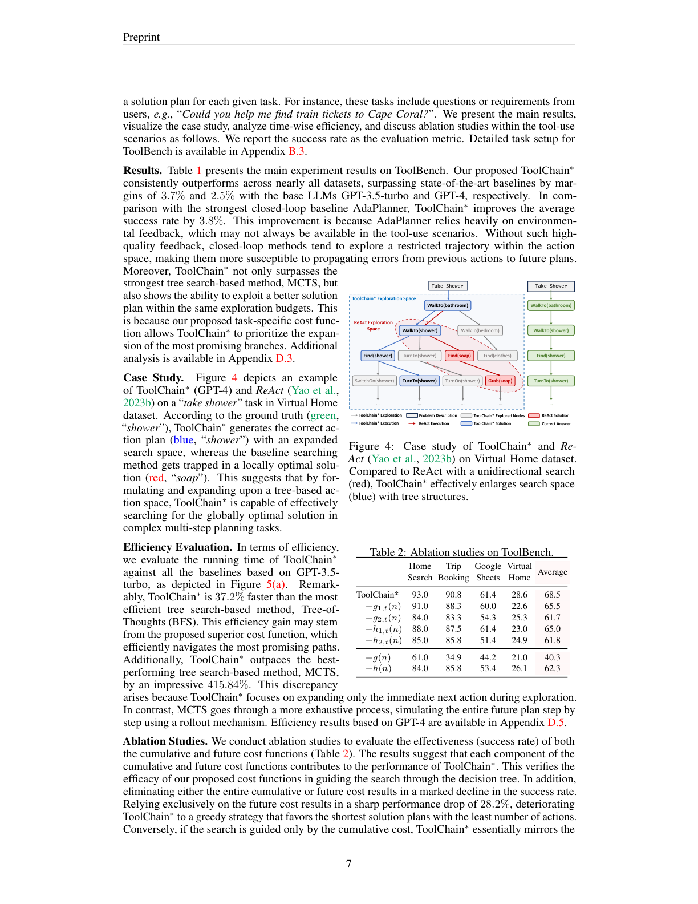
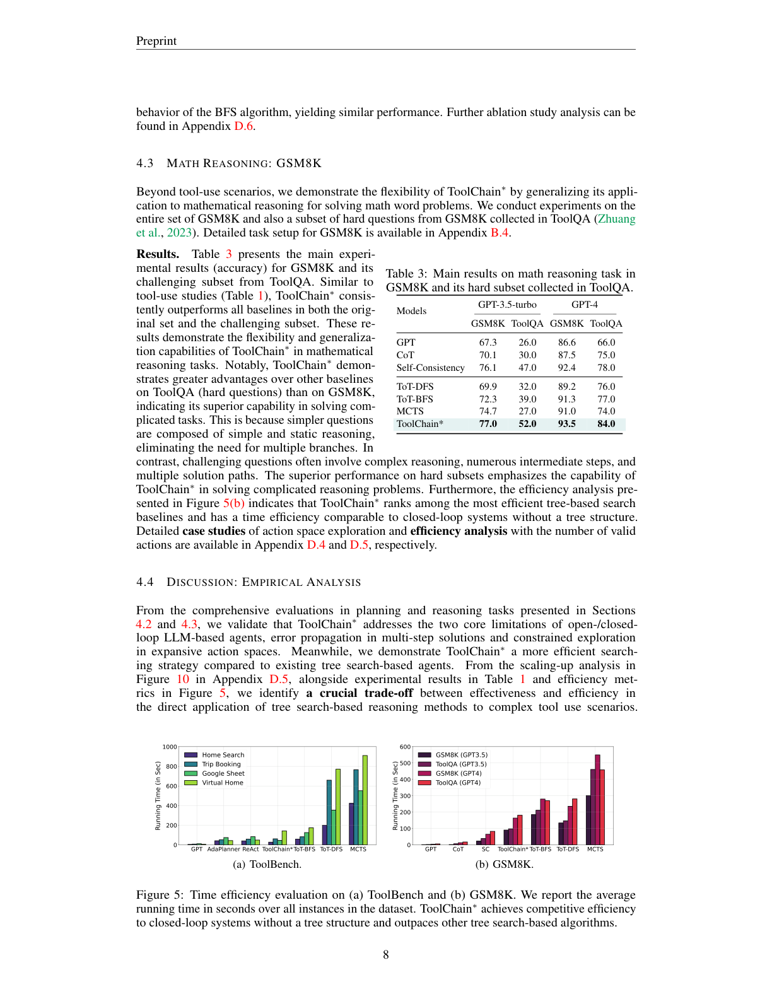
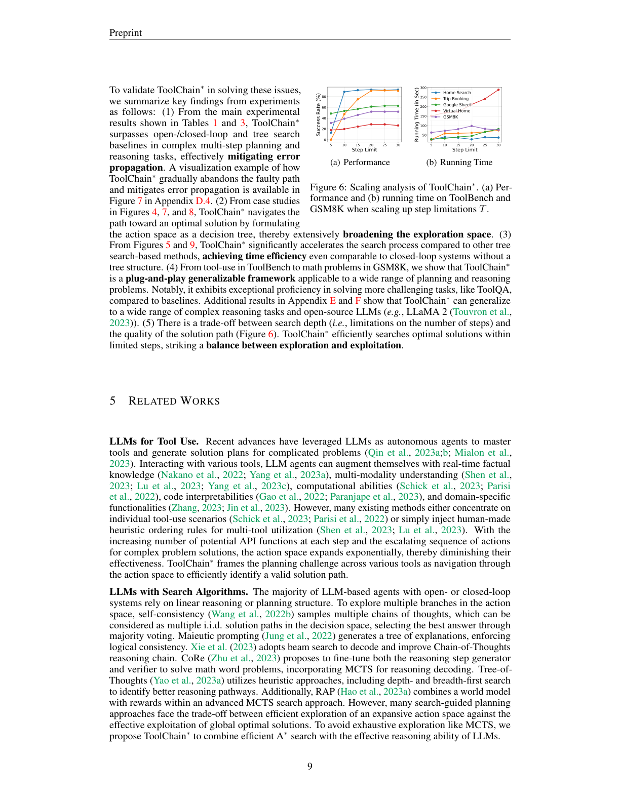

将工具调用规划建模为决策树，用任务特定代价函数（累计代价 + 未来代价）剪枝高代价分支，高效找到全局最优解
大语言模型（LLM）在解决复杂现实问题时展现出强大的决策与规划能力。基于 LLM 的自主智能体可与多样工具（如功能 API）交互，生成逐步执行一系列 API 调用的解决方案计划。海量候选 API 调用极大扩展了动作空间，使得高效动作空间导航至关重要。然而现有方法或受困于广阔动作空间中的单向探索（陷入局部最优），或穷举遍历所有潜在动作（导航低效）。为此，我们提出 ToolChain∗——一种基于树搜索的高效规划算法。它将整个动作空间建模为决策树，每个节点代表解决方案计划中的一次 API 调用；通过结合 A∗ 搜索与任务特定代价函数设计，高效剪枝可能含错误动作的高代价分支，找出最低代价的有效路径作为解。多工具使用与推理任务的广泛实验表明，ToolChain∗ 在广阔动作空间中有效平衡探索与利用，相较 SOTA 基线在规划与推理任务上平均分别提升 3.1% 与 3.5%，同时仅需 7.35× 与 2.31× 更少的耗时。
给定含数百候选 API 的动作空间，每步有多种函数名与参数，搜索全局最优解极具挑战。现有将 LLM 用作自主智能体的方法可分为四类（图 1）：(1) 开环方法（如 CoT）一次性生成完整计划、执行中不调整；(2) 贪婪闭环方法（如 ReAct）利用环境反馈贪婪决定下一步；(3) 闭环方法（如 AdaPlanner）持续监控并修改计划。然而这类单向导航系统有两大局限：错误传播（错误动作导致故障循环）与有限探索（仅探索动作空间一小部分、陷入局部最优）。
少数研究开始探索 (4) 基于树搜索的方法（ToT 用 DFS、RAP/LATS 用 MCTS），但需穷举探索几乎全部潜在动作，搜索全局最优解低效。为此我们提出 ToolChain∗——一种高效的 A∗ 树搜索规划方法：将工具使用规划建模为决策树，每个节点代表某步的潜在 API 调用；依据当前路径代价与估计的未来代价决定扩展哪些路径。任务特定代价函数会惩罚错误动作——错误动作沿路径传播时产生额外代价，使该路径逐步降优先级、在迭代中不被扩展。此外，不同于 MCTS 需多步模拟至终止状态的 rollout，ToolChain∗ 的未来代价估计只需扩展下一步，从而以可控步数有效搜索全局最优解。

问题形式化。 将 LLM 智能体解题视为规划过程：初始化时智能体接入 $m$ 个候选 API 函数池 $A=\{API_0,\dots,API_m\}$ 与自然语言任务描述 $g$，目标是将 $g$ 翻译为有序的 $T_g$ 次 API 调用序列 $p_g=\{a_0,\dots,a_{T_g}\}$。树搜索系统将规划问题建模为决策树搜索，每节点 $n$ 代表动作 $a_n$ 及从初始状态到该动作的有效路径状态 $s_n$，通过值函数寻找根到叶的最高值/最低代价路径。MCTS 以启发式探索构建搜索树，其子变体 UCT 已被用于 LLM 智能体：从根节点选最优子节点直至叶，扩展新子节点并执行 rollout 模拟至终止态，反向传播值函数 $Q(n)$ 更新路径分数。

MCTS vs. A∗ 搜索。 MCTS 的 rollout 需多次 LLM 调用直至终止态，且在单智能体（非双人对抗）规划任务中，随机 rollout 估计的值函数可能严重不准。ToolChain∗ 基于更高效的 A∗ 算法：A∗ 在扩展时仅需一次 LLM 调用确定下一步，由两代价函数引导——$g(n)$ 量化从根到 $n$ 的路径代价，$h(n)$ 为估计从 $n$ 到目标的未来代价。
ToolChain∗ 是最佳优先搜索算法，将动作空间建模为搜索树 $T$，每节点 $n$ 代表动作 $a_n$ 及由初始描述 $s_0$ 与前序动作构成的状态。每步从前沿节点集 $F(T)$ 中选 $f(n)$ 最小者扩展，用 LLM 生成 $k$ 个独立同分布候选动作，加入树并更新其代价函数（算法 1：Selection→Expansion→Update）。

代价函数。 借鉴 A∗：最小化 $f(n)=g(n)+h(n)$，其中 $g(n)$ 为从起点到 $n$ 的路径代价，$h(n)$ 为从 $n$ 到目标的启发式代价。
每节点设计单步值函数 $g_t(n)\in[0,1]$，代价为其补 $1-g_t(n)$。累计代价为所有祖先节点单步代价之和，结合任务特定启发式（长期记忆 $g_{t,1}$）与 LLM 自一致性频率（$g_{t,2}$）：
任务特定启发式 $g_{t,1}(n)$： 维护含成功经验的长程记忆（种子为数据集示例，评估中迭代扩充）；计算当前计划与记忆中各计划的最长公共子序列（LCS）得分 $LCS\ score(s_n,m_j)=\frac{LCS(s_n,m_j)}{\min(L(s_n),L(m_j))}$，取最高者 $g_{t,1}(n)=\max_{m_j}LCS\ score$，衡量相对成功比例。自一致性频率 $g_{t,2}(n)$： 采样 $k$ 个下一步动作，工具场景直接去重、推理场景用 fine-tune 的 DeBERTa 判定语义蕴含以去重，取集合中各动作频率 $g_{t,2}(n)=\#\{j|a^{(j)}_{t+1}=n\}/k$。
类似地，结合任务特定启发式 $h_{t,1}(n)$ 与 LLM 想象分 $h_{t,2}(n)$：
任务特定启发式 $h_{t,1}$： 由长期记忆得动作 $a$ 在计划中的平均相对位置分，未覆盖动作取其词汇最相近动作的启发式分。LLM 想象分 $h_{t,2}$： 直接让 LLM 自评估未来代价常过于自信，故让 LLM 想象直至目标 $n_T$ 的具体后续步骤，以当前节点祖先步数占想象计划总步数之比作为未来分 $h_{t,2}(n)=\frac{|\{a_n(n)\}|}{|\{a_n(n_T)\}|}$——分越高说明想象计划越贴合当前路径、剩余步数越少。
数据集： ToolBench 的 4 个工具场景（Home Search、Trip Booking、Google Sheets、Virtual Home，动作空间大、解路径深）+ GSM8K 数学推理。基线： 开环（GPT）、闭环（ReAct、AdaPlanner）、树搜索（ToT-DFS/BFS、MCTS）；数学推理对比 CoT、Self-Consistency（GSM8K 无环境反馈，排除 ReAct/AdaPlanner）。
ToolChain∗ 持续优于 SOTA，因 AdaPlanner 依赖环境反馈（工具场景常缺失）而易传播错误；而 ToolChain∗ 的任务特定代价函数优先扩展最有希望分支，在相同探索预算内找到更优解。

效率评估： ToolChain∗ 比最高效的树搜索 ToT(BFS) 快 37.2%，比 MCTS 快 415.84%——因只扩展下一步而非 rollout 模拟整段未来。消融表明累计与未来代价各分量均贡献性能。

ToolChain∗ 在原始集与困难子集上均最优，且在 ToolQA（难题）上相对其它基线优势更大——简单题无需多分支，难题则需多步与多路径。效率上，ToolChain∗ 在树搜索基线中最优、且与无树闭环系统相当。
关键发现：(1) ToolChain∗ 在复杂多步规划/推理上超越开/闭环与树搜索基线，缓解错误传播；(2) 将动作空间建模为决策树，大幅拓宽探索空间；(3) 相较其它树搜索方法显著加速，效率甚至可比无树闭环系统；(4) 从 ToolBench 工具使用到 GSM8K 数学，是即插即用的通用框架，且在 LLaMA 2 等开源 LLM 上可泛化；(5) 存在搜索深度（步数限制）与解路径质量间的权衡（图 6），ToolChain∗ 在有限步内高效搜索最优解。

LLM 工具使用： 现有方法多聚焦单一工具场景或注入人工启发式排序规则；随每步候选 API 增多、动作序列变长，动作空间指数膨胀，效果下降。ToolChain∗ 将跨工具规划建模为动作空间导航。LLM 与搜索算法： 多数智能体依赖线性推理；自一致性采样多条链（决策空间多 i.i.d. 路径）多数投票，Maieutic/CoRe/RAP 等引入树或 MCTS。但许多搜索引导方法在「广阔动作空间高效探索」与「全局最优有效利用」间权衡。为免 MCTS 式穷举，ToolChain∗ 将高效 A∗ 搜索与 LLM 推理能力结合。
本文提出 ToolChain∗——一种基于 A∗ 树搜索的规划算法，以增强 LLM 调用外部工具应对复杂现实规划与推理任务的能力。相较开/闭环 LLM 智能体，它将动作空间建模为决策树，有效缓解错误传播并大幅扩展搜索空间；相较其它树搜索方法显著加速搜索，在复杂动作空间中实现探索与利用的动态平衡。我们在开源与闭源 LLM 的广泛规划/推理任务上验证了 ToolChain∗ 的通用性，并以显著优于 SOTA 基线的表现展示了其作为高效规划算法的潜力。